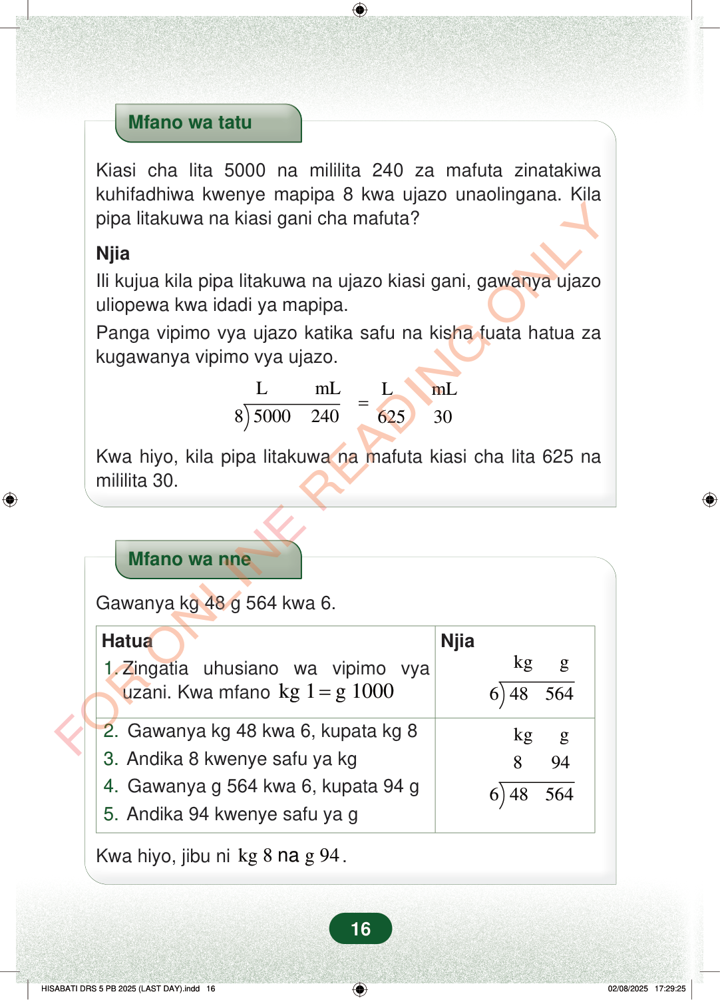

Mfano wa tatuKiasi cha lita 5000 na mililita 240 za mafuta zinatakiwakuhifadhiwa kwenye mapipa 8 kwa ujazo unaolingana. Kilapipa litakuwa na kiasi gani cha mafuta?NjiaIli kujua kila pipa litakuwa na ujazo kiasi gani, gawanya ujazouliopewa kwa idadi ya mapipa.Panga vipimo vya ujazo katika safu na kisha fuata hatua zakugawanya vipimo vya ujazo.LmLLmL8500024062530=Kwa hiyo, kila pipa litakuwa na mafuta kiasi cha lita 625 namililita 30.Mfano wa nneGawanya kg 48 g 564 kwa 6.HatuaNjiakgg1.Zingatia uhusiano wa vipimo vyauzani. Kwa mfanokg 1g 1000=648564kgg8946485642.Gawanya kg 48 kwa 6, kupata kg 83.Andika 8 kwenye safu ya kg4.Gawanya g 564 kwa 6, kupata 94 g5.Andika 94 kwenye safu ya gKwa hiyo, jibu nikg 8g 94na.16
Mfano wa tatu
Kiasi cha lita 5000 na mililita 240 za mafuta zinatakiwa kuhifadhiwa kwenye mapipa 8 kwa ujazo unaolingana. Kila pipa litakuwa na kiasi gani cha mafuta?
Njia Ili kujua kila pipa litakuwa na ujazo kiasi gani, gawanya ujazo uliopewa kwa idadi ya mapipa. Panga vipimo vya ujazo katika safu na kisha fuata hatua za kugawanya vipimo vya ujazo.
L mL L mL 8 5000 240 625 30 =
Kwa hiyo, kila pipa litakuwa na mafuta kiasi cha lita 625 na mililita 30.
Mfano wa nne
Gawanya kg 48 g 564 kwa 6.
Hatua
Njia
kg g
1. Zingatia uhusiano wa vipimo vya uzani. Kwa mfano kg 1 g 1000 =
6 48 564
kg g 8 94
6 48 564
2. Gawanya kg 48 kwa 6, kupata kg 8 3. Andika 8 kwenye safu ya kg 4. Gawanya g 564 kwa 6, kupata 94 g 5. Andika 94 kwenye safu ya g
Kwa hiyo, jibu ni kg 8 g 94 na .
16
Mfano wa kugawanya lita 5000 na mililita 240 za mafuta katika mapipa 8 sawa. Kila pipa lina lita 625 na mililita 30.Mfano wa tatuKiasi cha lita 5000 na mililita 240 za mafuta zinatakiwa kuhifadhiwa kwenye mapipa 8 kwa ujazo unaolingana.Kila pipa litakuwa na kiasi gani cha mafuta?NjiaIli kujua kila pipa litakuwa na ujazo kiasi gani, gawanya ujazo uliopewa kwa idadi ya mapipa.Panga vipimo vya ujazo katika safu na kisha fuata hatua za kugawanya vipimo vya ujazo.<math><mrow><mtable><mtr><mtd style="padding-left:0pt;padding-right:5.9776pt;"><mi>L</mi></mtd><mtd style="padding-left:5.9776pt;padding-right:0pt;"><mpadded lspace="0"><mi>mL</mi></mpadded></mtd></mtr><mtr><mtd style="padding-left:0pt;padding-right:5.9776pt;"><mn>5000</mn></mtd><mtd style="padding-left:5.9776pt;padding-right:0pt;"><mn>240</mn></mtd></mtr></mtable><mo>÷</mo><mn>8</mn><mo>=</mo><mtable><mtr><mtd style="padding-left:0pt;padding-right:5.9776pt;"><mi>L</mi></mtd><mtd style="padding-left:5.9776pt;padding-right:0pt;"><mpadded lspace="0"><mi>mL</mi></mpadded></mtd></mtr><mtr><mtd style="padding-left:0pt;padding-right:5.9776pt;"><mn>625</mn></mtd><mtd style="padding-left:5.9776pt;padding-right:0pt;"><mn>30</mn></mtd></mtr></mtable></mrow></math>Kwa hiyo, kila pipa litakuwa na mafuta kiasi cha lita 625 na mililita 30.Mfano wa kugawanya kilogramu 48 na gramu 564 kwa 6 kwa kufuata hatua. Jibu ni kilogramu 8 na gramu 94.Mfano wa nneGawanya kg 48 g 564 kwa 6.HatuaNjia1. Zingatia uhusiano wa vipimo vya uzani.Kwa mfano kg 1 = g 1000<math><mrow><mtable><mtr><mtd style="padding-left:0pt;padding-right:5.9776pt;"><mpadded lspace="0"><mi>kg</mi></mpadded></mtd><mtd style="padding-left:5.9776pt;padding-right:0pt;"><mrow><mi mathvariant="normal">g</mi><mspace></mspace></mrow></mtd></mtr><mtr><mtd style="padding-left:0pt;padding-right:5.9776pt;"><mn>48</mn></mtd><mtd style="padding-left:5.9776pt;padding-right:0pt;"><mn>564</mn></mtd></mtr></mtable><mo>÷</mo><mn>6</mn></mrow></math>2. Gawanya kg 48 kwa 6, kupata kg 83. Andika 8 kwenye safu ya kg4. Gawanya g 564 kwa 6, kupata 94 g5. Andika 94 kwenye safu ya g<math><mrow><mtable><mtr><mtd style="padding-left:0pt;padding-right:5.9776pt;"><mpadded lspace="0"><mi>kg</mi></mpadded></mtd><mtd style="padding-left:5.9776pt;padding-right:0pt;"><mrow><mi mathvariant="normal">g</mi><mspace></mspace></mrow></mtd></mtr><mtr><mtd style="padding-left:0pt;padding-right:5.9776pt;"><mn>8</mn></mtd><mtd style="padding-left:5.9776pt;padding-right:0pt;"><mn>94</mn></mtd></mtr><mtr><mtd style="padding-left:0pt;padding-right:5.9776pt;"><mn>48</mn></mtd><mtd style="padding-left:5.9776pt;padding-right:0pt;"><mn>564</mn></mtd></mtr></mtable><mo>÷</mo><mn>6</mn></mrow></math>Kwa hiyo, jibu ni kg 8 na g 94.